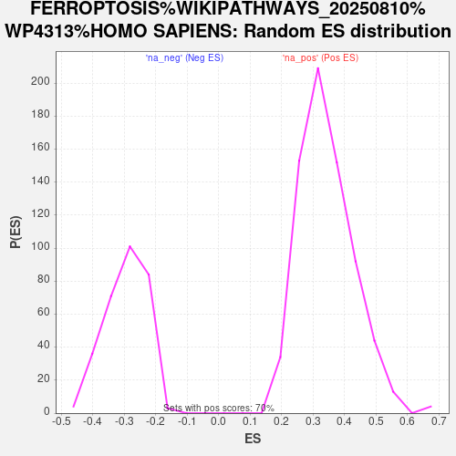

Profile of the Running ES Score & Positions of GeneSet Members on the Rank Ordered List
| Dataset | PAL_vs_CTL_ranked |
| Phenotype | NoPhenotypeAvailable |
| Upregulated in class | na_pos |
| GeneSet | FERROPTOSIS%WIKIPATHWAYS_20250810%WP4313%HOMO SAPIENS |
| Enrichment Score (ES) | 0.7602148 |
| Normalized Enrichment Score (NES) | 2.2195396 |
| Nominal p-value | 0.0 |
| FDR q-value | 3.6653367E-4 |
| FWER p-Value | 0.007 |
| SYMBOL | RANK IN GENE LIST | RANK METRIC SCORE | RUNNING ES | CORE ENRICHMENT | |
|---|---|---|---|---|---|
| 1 | ACSL3 | 3 | 10.824 | 0.1754 | Yes |
| 2 | LPCAT3 | 11 | 8.055 | 0.3057 | Yes |
| 3 | BACH1 | 127 | 2.775 | 0.3436 | Yes |
| 4 | AKR1C1 | 129 | 2.774 | 0.3885 | Yes |
| 5 | POR | 206 | 2.270 | 0.4206 | Yes |
| 6 | GCLC | 221 | 2.208 | 0.4556 | Yes |
| 7 | SLC3A2 | 309 | 1.948 | 0.4818 | Yes |
| 8 | SLC39A14 | 312 | 1.940 | 0.5132 | Yes |
| 9 | SLC39A8 | 334 | 1.910 | 0.5429 | Yes |
| 10 | SLC7A11 | 418 | 1.734 | 0.5659 | Yes |
| 11 | AIFM2 | 419 | 1.734 | 0.5940 | Yes |
| 12 | SLC38A1 | 420 | 1.731 | 0.6221 | Yes |
| 13 | SLC11A2 | 443 | 1.694 | 0.6482 | Yes |
| 14 | ACSL1 | 468 | 1.653 | 0.6736 | Yes |
| 15 | GCLM | 649 | 1.441 | 0.6858 | Yes |
| 16 | IREB2 | 744 | 1.364 | 0.7022 | Yes |
| 17 | ACSL5 | 805 | 1.312 | 0.7197 | Yes |
| 18 | HMGCR | 920 | 1.227 | 0.7326 | Yes |
| 19 | PRNP | 926 | 1.224 | 0.7521 | Yes |
| 20 | HMOX1 | 1088 | 1.110 | 0.7602 | Yes |
| 21 | SLC40A1 | 1471 | 0.919 | 0.7515 | No |
| 22 | PCBP1 | 2428 | 0.626 | 0.7026 | No |
| 23 | ATG5 | 3018 | 0.501 | 0.6744 | No |
| 24 | FDFT1 | 3287 | 0.455 | 0.6652 | No |
| 25 | DPP4 | 4377 | 0.305 | 0.6029 | No |
| 26 | AKR1C2 | 4392 | 0.303 | 0.6069 | No |
| 27 | COQ2 | 5519 | 0.186 | 0.5404 | No |
| 28 | CTH | 6160 | 0.132 | 0.5030 | No |
| 29 | CHMP5 | 6912 | 0.083 | 0.4580 | No |
| 30 | FTL | 7599 | 0.035 | 0.4161 | No |
| 31 | CISD1 | 7949 | 0.015 | 0.3948 | No |
| 32 | TFRC | 9598 | -0.085 | 0.2944 | No |
| 33 | FTH1 | 9970 | -0.111 | 0.2733 | No |
| 34 | CBS | 10147 | -0.124 | 0.2644 | No |
| 35 | VDAC3 | 10914 | -0.182 | 0.2201 | No |
| 36 | PHKG2 | 11791 | -0.260 | 0.1702 | No |
| 37 | SAT2 | 12651 | -0.355 | 0.1229 | No |
| 38 | CHMP6 | 12652 | -0.356 | 0.1286 | No |
| 39 | MAP1LC3A | 13663 | -0.496 | 0.0743 | No |
| 40 | NOX4 | 14213 | -0.603 | 0.0501 | No |
| 41 | MAP1LC3C | 14827 | -0.751 | 0.0244 | No |
| 42 | GPX4 | 15620 | -1.115 | -0.0064 | No |
| 43 | STEAP3 | 16203 | -2.710 | 0.0016 | No |
